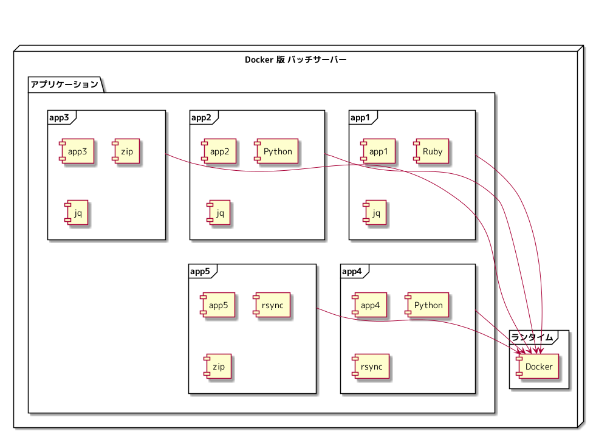
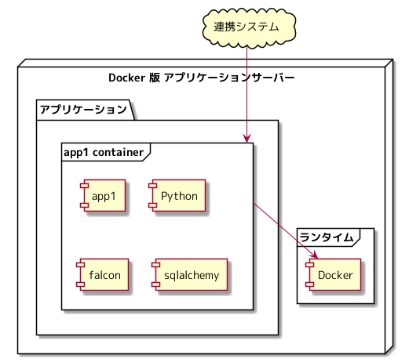

さくらインターネット Advent Calendar 2021 5日目の記事になります。
Docker を使うと何がうれしいのか自分なりに考えてみた にて、 Docker を使うと、どういった面でうれしいことがあるのかについて書きました。
Docker を使うと何がうれしいのかということは説明できたかと思いますが、 Docker を提供すれば、「万事解決めでたしめでたし」となるのかというところを考えていきたいと思います。
サーバー管理者になって考えてみる
今回は、サーバー管理者として Docker でのアプリケーション実行環境をアプリケーション開発者に提供したと仮定し、 下記の観点にて、どのようなことが考えられそうかについて、説明していきます。
- 依存関係
- 移植性
- デプロイ
下記、 Docker によるバッチサーバー、アプリケーションサーバーを提供したとして、何が起きそうかについて想像力を働かせてみます。
バッチサーバー

アプリケーションサーバー

依存関係
サーバーの中だけを見ると Docker が動く環境さえ用意すればアプリケーションはどこでも実行できる状態になっています。
アプリケーションサーバーは、どこかのアプリケーションからリクエストを受ける、システム連携の側面が強いのではないかと思います。
システム連携を考えたときに、どのようにアプリケーションに到達するのか考えてみます。 このサーバー構成では、サーバーに付けた名前 ( DNS ) や IP アドレスでアプリケーションに到達することになるでしょう。
このサーバーに付けた名前や IP アドレスで、アプリケーションに接続するというシステム連携になっており、 アプリケーションがサーバーとの依存関係を断てていないという状況が見えてきます。
Docker だけでは、アプリケーションがサーバーに強く依存している状況を打破することが難しそうだなということが考えられます。
移植性
一度、サーバー構築してしまえば、そこからはメンテナンスフリーとはならないことを皆さんよくご存知かと思います。 OS 、ミドルウェア、アプリケーションを更新していきながらサービスを維持していくことになるはずです。 Docker も Linux などのサーバー上で動くため、これらの更新からは逃れられません。
バッチサーバーの OS にパッチを当て再起動するという状況は容易に想像できるかと思います。 アプリケーション開発者にバッチサーバーを再起動しますと調整するコストが発生しそうです。
バッチサーバー、アプリケーションサーバーの OS を更新するという作業も容易に想像できるかと思います。 アプリケーション開発者と OS を更新するための計画を調整するコストが発生しそうです。
サーバーの中だけを見ると Docker が動く環境さえ用意すればアプリケーションはどこでも実行できる状態になっていますが、 アプリケーションとサーバーが密に結合しており、サーバー管理者の裁量でサーバーをコントロールできる部分が少なそうに思います。
「Docker が動く環境さえ用意すればアプリケーションはどこでも実行できる」が、アプリケーションとサーバーが密に結合しているので、サーバーを更新していくという側面では、 Docker を使っていなかった頃と変わっておらず、移植性を生かしきれていないように見えます。
デプロイ
「 Docker コンテナのアプリケーションをサーバーにどのように展開するのか」は、 アプリケーション開発者に委ねているという状況にて、どうなりそうであるかを考えてみます。 Docker コンテナのアプリケーションの展開方法として、下記のような選択肢がありそうです。
- Docker コマンドを実行し、アプリケーションデプロイする
- シェルスクリプトで、アプリケーションをデプロイする
- Makefile で、アプリケーションをデプロイする
- Ansible で、アプリケーションをデプロイする
デプロイのインタフェースが統一されないことにより、 様々なデプロイ方法が爆誕し、カオスな状況が生まれそうです。 「このアプリケーションってどうやって起動しているの？」という状況を容易に想像できます。
バッチサーバーは、定期実行するための選択肢が systemd.timer, cron と複数あり、 アプリケーション開発者が自分の好みの組みで Docker コンテナの定期実行を仕掛けたことにより、 「 systemd.timer を使っている対象があったのか…移行完了と判断してサーバー停止しちゃったよ」という状況が発生しそうな未来が見えます。
Docker で動くアプリケーションをデプロイする統一されたインタフェースを用意する必要がありそうです。
Docker を導入すれば、万事解決しそうか
「なんだか Docker を導入しただけでは、万事解決めでたしめでたし」とはいかなそうであることを感じ取ってもらえたでしょうか。
次回は、 Docker を導入しただけでは、万事解決とならない部分をどのように解決していくのかについて考えてみます。